Background
The draw() function combines plots of model terms into a
single figure using {patchwork}. Some terms need their own facets or
coordinate systems, so separate plots allow {gratia} to display them
together.
Use ggplot2 themes to change the appearance of these plots. The
& operator applies a theme to every plot in the figure.
This article shows how to style {gratia} components and how to build
plots from the underlying estimates when you need different layers or
mappings from variables to aesthetics.
Adding layers to plots with the & operator
We start by simulating some data and fitting a GAM with four smooth functions
library("gratia")
library("mgcv")
#> Loading required package: nlme
#> This is mgcv 1.9-4. For overview type '?mgcv'.
library("ggplot2")
library("dplyr")
#>
#> Attaching package: 'dplyr'
#> The following object is masked from 'package:nlme':
#>
#> collapse
#> The following objects are masked from 'package:stats':
#>
#> filter, lag
#> The following objects are masked from 'package:base':
#>
#> intersect, setdiff, setequal, union
library("patchwork")
# simulate data
n <- 400
eg1 <- data_sim("eg1", n = n, seed = 1)
# fit model
m <- gam(y ~ s(x0) + s(x1) + s(x2) + s(x3),
data = eg1, method = "REML")The default plot produced by draw() is
p <- draw(m)
p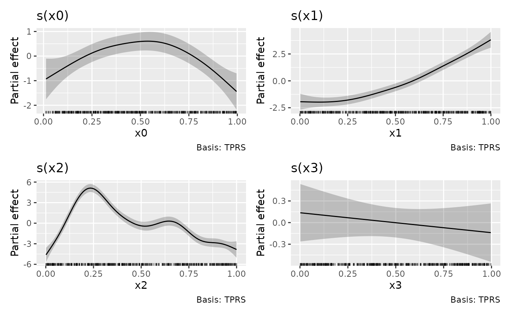
If we want to change the theme for the plots, we can’t append a
theme() layer to p as this only affects the
last plot in the patchwork1
p + theme_bw()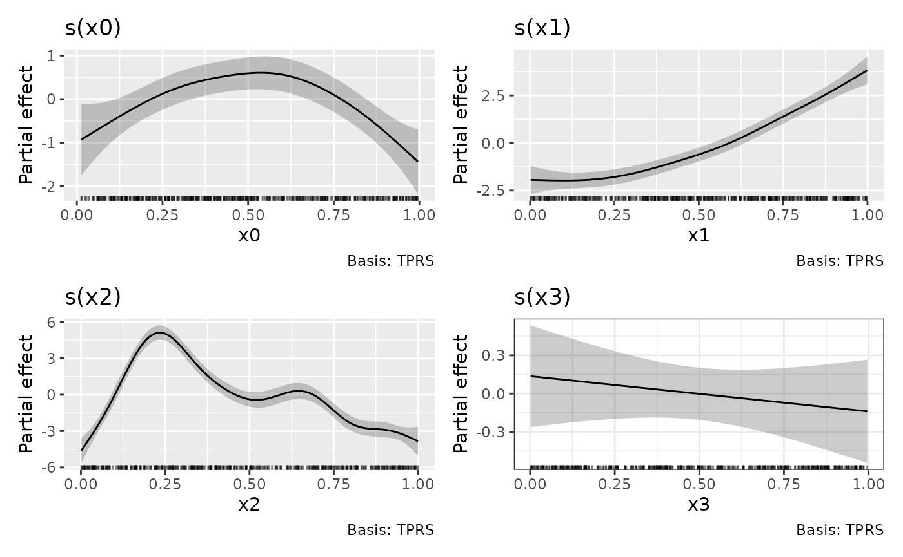
One way to apply the theme to all plots in the patchwork is to the
the & operator.
p & theme_bw()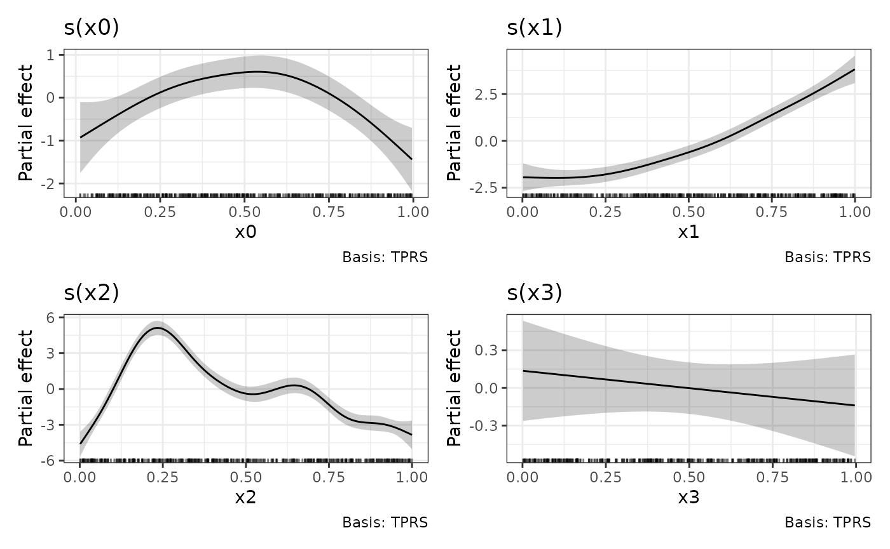
Styling gratia components
Gratia uses ggplot2 themes for its plot components. Defaults retain
the existing appearance. Change an existing figure with
& so every panel receives the settings:
p & theme(
geom.gratia.smooth = element_geom(colour = "navy", linewidth = 0.8),
geom.gratia.interval = element_geom(fill = "navy"),
gratia.alpha.interval = 0.15
)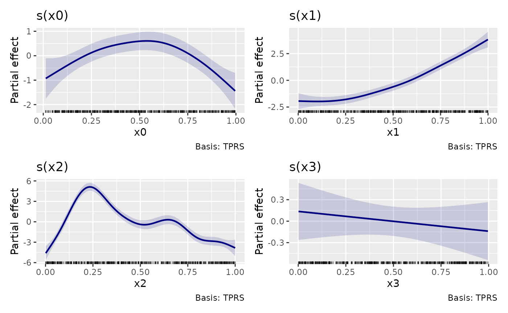
Use geom.gratia.partial.residual for partial residuals,
geom.gratia.diagnostic.point for diagnostic points, and
geom.gratia.reference for reference lines. Opacity uses
numeric settings such as gratia.alpha.interval and
gratia.alpha.diagnostic.point. More specific settings, such
as geom.gratia.smooth.interval, override the general
interval setting. See ?gratia_theme_get for the component
list.
Set a package override for subsequent plots without changing other ggplot2 plots. The override is attached when the plot is created:
old_theme <- gratia_theme_set(theme(gratia.alpha.interval = 0.1))
draw(m)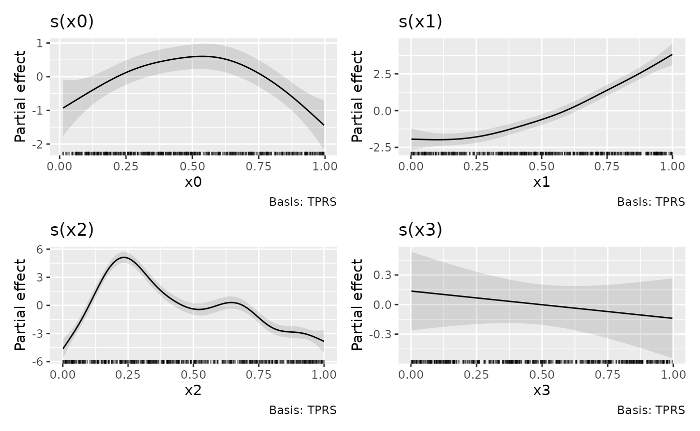
gratia_theme_set(old_theme)For temporary settings, use withr::with_options() with
the option gratia.plot.theme. Settings added to an existing
plot follow normal ggplot2 theme merging. Explicit deprecated aesthetic
arguments remain fixed overrides, even when they equal the old defaults.
For example, replace
draw(m, smooth_col = "navy", ci_alpha = 0.15) with the
component theme above.
Common replacements for deprecated arguments are:
| Previous argument | Theme setting |
|---|---|
smooth_col |
geom.gratia.smooth = element_geom(colour = ...) |
ci_col, ci_alpha
|
geom.gratia.interval = element_geom(fill = ...),
gratia.alpha.interval
|
resid_col |
geom.gratia.partial.residual = element_geom(colour = ...) |
contour_col |
geom.gratia.contour = element_geom(colour = ...) |
point_col, point_alpha in
diagnostics |
geom.gratia.diagnostic.point = element_geom(colour = ...),
gratia.alpha.diagnostic.point
|
line_col in diagnostics |
geom.gratia.diagnostic.reference = element_geom(colour = ...) |
colour, alpha in smooth
samples |
geom.gratia.sample = element_geom(colour = ...),
gratia.alpha.sample
|
ci_3d_col, ci_3d_alpha
|
geom.gratia.surface.interval = element_geom(fill = ...),
gratia.alpha.surface.interval
|
alpha, linewidth in chain
diagnostics |
gratia.alpha.chain,
geom.gratia.chain = element_geom(linewidth = ...)
|
For parametric curves use geom.gratia.effect; for
derivatives use geom.gratia.derivative. Rootograms have
separate rootogram.bar, rootogram.fitted,
rootogram.reference and rootogram.warning
elements. MRF interval lines use
geom.gratia.smooth.interval, independently of the points
controlled by geom.gratia.smooth. Diagnostic boxplots use
geom.gratia.diagnostic.boxplot.
Optional discrete palettes
Grouped curves and ribbons retain the current Okabe–Ito palette and hue fallback unless another palette is requested. Use the same function for colour and fill to keep groups paired:
tol <- gratia_palette("tol_banded_16")
theme(palette.colour.discrete = tol, palette.fill.discrete = tol)
#> <theme> List of 2
#> $ palette.colour.discrete:function (n)
#> $ palette.fill.discrete :function (n)
#> @ complete: logi FALSE
#> @ validate: logi TRUEPaul Tol choices include bright and vibrant (7 colours), muted (9),
dark (11), and banded schemes (12, 16 or 20). Dark favours visibility
against white; colours within larger banded schemes are less distinct.
Finite palettes error when their capacity is exceeded and do not
interpolate or recycle colours. See ?gratia_palette for
attribution and available names.
Continuous palettes can also be changed through
palette.fill.continuous and
palette.colour.continuous. Existing scale arguments still
accept complete scales when custom transformations, breaks or guides are
needed.
Combining individual plots produced by draw()
draw() methods like draw.gam() return an
object created by patchwork::wrap_plots(), and as a result
it isn’t straightforward to combine those objects into a new
patchwork
p1 <- draw(m, select = "s(x0)")
p2 <- draw(m, select = "s(x1)")
p3 <- draw(m, select = "s(x2)")
p1 + p2 + p3
#> Error in `wrap_dims()`:
#> ! Need 3 panels, but together `nrow` and `ncol` only provide 1.
#> ℹ Please increase `ncol` and/or `nrow`.To avoid the error, we need to use
patchwork::plot_layout() to set the dimensions we want
p1 + p2 + p3 + plot_layout(ncol = 3)
The above could have been achieved directly via
draw()
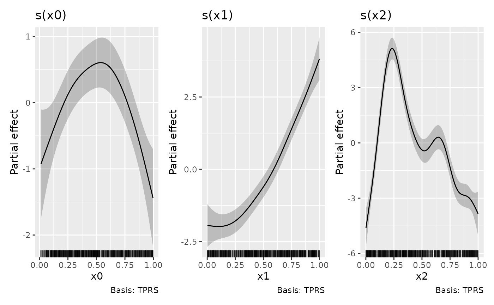
but it is instructive to know how to combine the outputs of
draw() should the need arise, such as when you want to
create a patchwork of plots from different models.
Drawing surfaces in 3D
Numeric smooth and parametric surfaces can be displayed with
surface = "3d". The default remains
surface = "raster"; surface = "tile" draws
vector rectangles. The 3D display retains the current diverging RdBu
palette, fill ranges, theme, and facet styling. Use
palette.fill.continuous in theme() to choose
another palette.
eg2 <- data_sim("eg2", n = 400, seed = 2)
m_surface <- gam(y ~ te(x, z, k = c(5, 5)) + x:z,
data = eg2, method = "REML")
draw(m_surface, surface = "3d", n_2d = 20,
surface_3d = list(yaw = 45, persp = FALSE))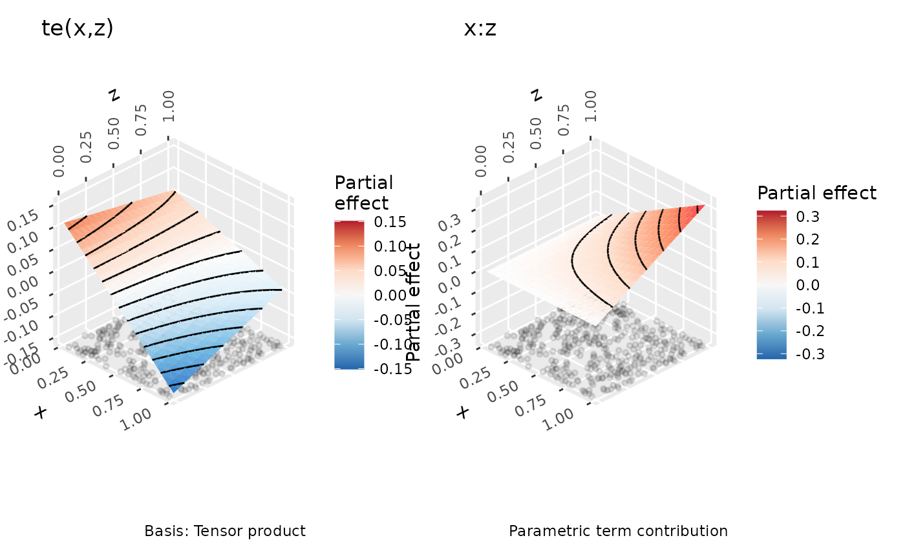
surface_3d is a named list passed to
ggcube::coord_3d(). gratia uses only the coordinate system
from that function, leaving its additional theme settings out. Options
such as yaw, roll, pitch,
persp, ratio, and light configure
a shared view across all 3D panels.
surface_3d = list(dist = 3) controls viewing distance; the
top-level dist argument still controls exclusion far from
data.
Lighting defaults to ggcube::light(backface_scale = 1),
keeping the back faces lit. Supply your own light object to replace this
default, for example
surface_3d = list(light = ggcube::light(backface_scale = -1))
to restore ggcube’s original back-face shading, or
surface_3d = list(light = ggcube::light(method = "none"))
to disable lighting. Surface faces have full opacity. Floor
observations, boundaries, and contours share the surface’s depth
ordering, so hidden parts are occluded by nearer faces.
For a different view for each term, customize the named plots from
assemble():
panels <- assemble(m_surface, surface = "3d", n_2d = 20)
# coord_3d() returns a coordinate and a theme; take just the coordinate.
panels[["te(x,z)"]] <- panels[["te(x,z)"]] +
ggcube::coord_3d(yaw = 45, persp = FALSE,
light = ggcube::light(backface_scale = 1))[[1]]
#> Coordinate system already present.
#> ℹ Adding new coordinate system, which will replace the existing one.
panels[["x:z"]] <- panels[["x:z"]] +
ggcube::coord_3d(yaw = -20, persp = FALSE,
light = ggcube::light(backface_scale = 1))[[1]]
#> Coordinate system already present.
#> ℹ Adding new coordinate system, which will replace the existing one.
wrap_plots(panels)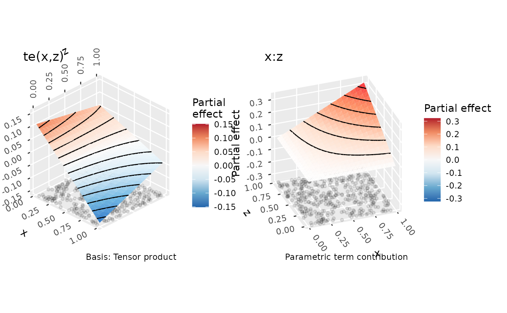
The two displayed covariates form the horizontal axes, and the
partial effect forms the vertical axis. Higher-dimensional smooths and
interactions retain conditioning facets; n_2d controls
surface resolution and n_3d/n_4d control
covariate slices. Contours follow the surface, and available observation
locations appear on the floor. No uncertainty surfaces are added. Direct
calls to draw(smooth_estimates(model), surface = "3d") and
draw(parametric_effects(model), surface = "3d") use the
same renderer.
Scattered evaluation data use piecewise-linear Delaunay triangles and
require geometry. Support masking and soap-film domain
checks also require sf. Faces crossing known excluded
regions are discarded conservatively; a coarse mesh may therefore omit
additional faces near a boundary. Increase the evaluation density to
resolve these areas. Spherical smooths retain their geographic
display.
Building your own plot by hand
Themes control the appearance of plots returned by
draw(). To choose different layers or map additional
variables to aesthetics, build a plot from the estimates returned by
{gratia}.
Instead, {gratia} also exports the lower-level functions used
draw() so that you can create your own plot using whatever
{ggplot2} functions make sense. In the next few code blocks we’ll see
how the plot created by draw(m) can be recreated by hand
using these lower-level building blocks.
The main thing we need is to evaluate the smooths at values of their
covariates. This is done using smooth_estimates(). We also
need to add a credible interval to the evaluations, which can be done
tidyverse-style via add_confint()
# evaluate the smooths
sm <- smooth_estimates(m) |>
add_confint()
sm
#> # A tibble: 400 × 11
#> .smooth .type .by .estimate .se x0 x1 x2 x3 .lower_ci
#> <chr> <chr> <chr> <dbl> <dbl> <dbl> <dbl> <dbl> <dbl> <dbl>
#> 1 s(x0) TPRS NA -0.929 0.422 0.0131 NA NA NA -1.76
#> 2 s(x0) TPRS NA -0.881 0.396 0.0230 NA NA NA -1.66
#> 3 s(x0) TPRS NA -0.834 0.372 0.0329 NA NA NA -1.56
#> 4 s(x0) TPRS NA -0.786 0.348 0.0429 NA NA NA -1.47
#> 5 s(x0) TPRS NA -0.738 0.326 0.0528 NA NA NA -1.38
#> 6 s(x0) TPRS NA -0.690 0.305 0.0627 NA NA NA -1.29
#> 7 s(x0) TPRS NA -0.643 0.287 0.0727 NA NA NA -1.20
#> 8 s(x0) TPRS NA -0.595 0.270 0.0826 NA NA NA -1.12
#> 9 s(x0) TPRS NA -0.548 0.255 0.0925 NA NA NA -1.05
#> 10 s(x0) TPRS NA -0.501 0.242 0.102 NA NA NA -0.975
#> # ℹ 390 more rows
#> # ℹ 1 more variable: .upper_ci <dbl>By default draw.gam() will add partial residuals to the
partial effects plots. To achieve the same effect, we need to add the
partial residuals to the data used to fit the model. This can be done
via add_partial_residuals()
# add partial residuals to data
eg1 <- eg1 |>
add_partial_residuals(m)This will2 add columns with names
"s(x0)". "s(x1)", etc. to the data.
names(eg1)
#> [1] "y" "x0" "x1" "x2" "x3" "f" "f0" "f1" "f2"
#> [10] "f3" "s(x0)" "s(x1)" "s(x2)" "s(x3)"Now we have everything we need to recreate the plots created by
draw.gam(). In the code block below we filter
sm to focus on a specific smooth, here f(x2) ("s(x2)"), then we add
- a rug plot of the observed values of
x2, - the credible interval around the estimated smooth,
- the partial residuals as a point layer,
- the estimated smooth as a line layer,
- some annotation
p_sx2 <- sm |>
filter(.smooth == "s(x2)") |>
ggplot() +
geom_rug(aes(x = x2),
data = eg1,
sides = "b", length = grid::unit(0.02, "npc")
) +
geom_ribbon(aes(ymin = .lower_ci, ymax = .upper_ci, x = x2),
alpha = 0.2
) +
geom_point(aes(x = x2, y = `s(x2)`),
data = eg1, size = 1.5, colour = "steelblue3"
) +
geom_line(aes(x = x2, y = .estimate), linewidth = 1.2) +
labs(y = "Partial effect", title = "s(x2)")
p_sx2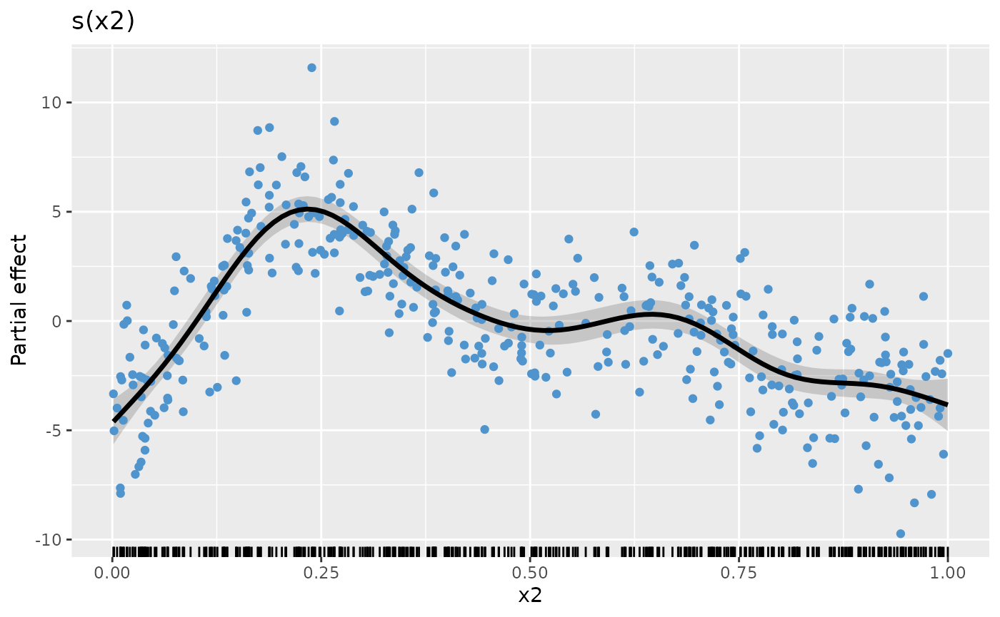
Assuming we repeat the above steps for the other smooths, creating
plot objects p_sx0, p_sx1, p_sx2,
and p_sx3 (code not shown), we can complete the plot by
creating the patchwork with the desired number of rows and columns
p_sx0 + p_sx1 + p_sx2 + p_sx3 + plot_layout(ncol = 2)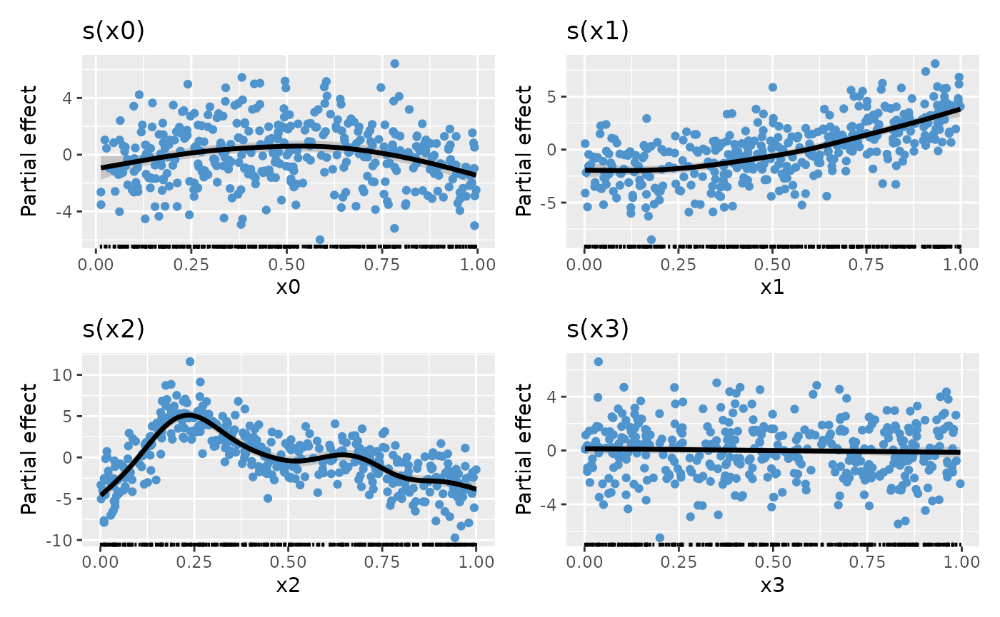
The real benefit of having complete control over how the data are plotted is that you can use the power of {ggplot2} to map additional variables to plot aesthetics. As an example, let’s assume we have a factor variable in the original data and we want to colour the partial residuals according to the levels of this factor. Let’s create that factor
Now we can modify our plotting code to map fac to the
colour aesthetic when we plot the partial residuals. To save some
typing, we’ll reorder the layers in the plot and add the partial
residuals last
plt <- sm |>
filter(.smooth == "s(x2)") |>
ggplot() +
geom_rug(aes(x = x2),
data = eg1,
sides = "b", length = grid::unit(0.02, "npc")
) +
geom_ribbon(aes(ymin = .lower_ci, ymax = .upper_ci, x = x2),
alpha = 0.2
) +
geom_line(aes(x = x2, y = .estimate), linewidth = 1.2) +
labs(y = "Partial effect", title = "s(x2)")
plt +
geom_point(
aes(
x = x2, y = `s(x2)`,
colour = fac
), # <-- map fac to colour aesthetic
data = eg1, size = 1.5
)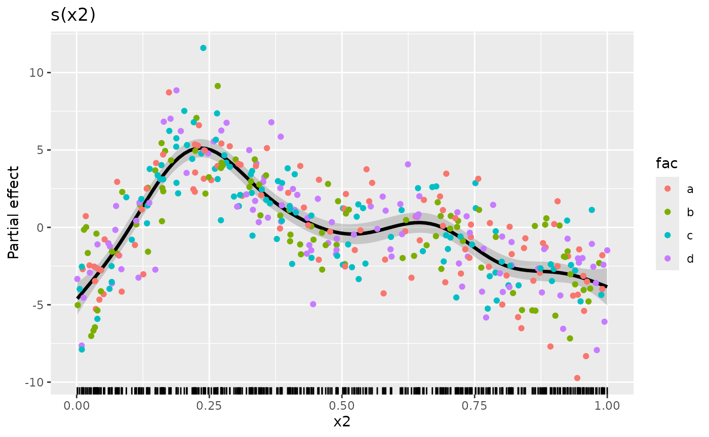
We can also do some simple model checking by plotting the smooth with
partial residuals coloured according to one of the other covariates (we
could also do this by plotting the actual residuals against covariates).
In the code chunk below, we map the covariate x1 to both
the colour and size aesthetics (note we deleted
size = 1.5 to allow the mapping to size)
plt +
geom_point(
aes(
x = x2, y = `s(x2)`,
colour = x1, size = x1
), # <-- map fac to colour aesthetic
data = eg1, alpha = 0.3
) + # <-- deleted cex!!
scale_colour_viridis_c(option = "plasma")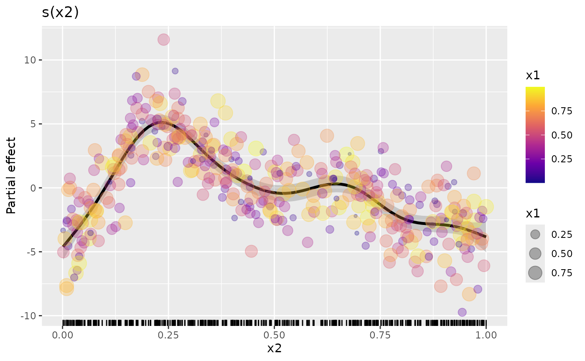
The resulting plot doesn’t show any particular problems with the model because of the way the data were simulated, but hopefully this illustrates what can be possible once you use the low-level functions provided by {gratia}.